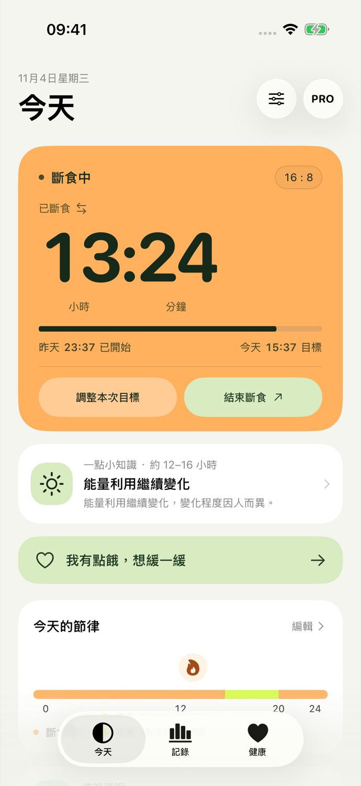
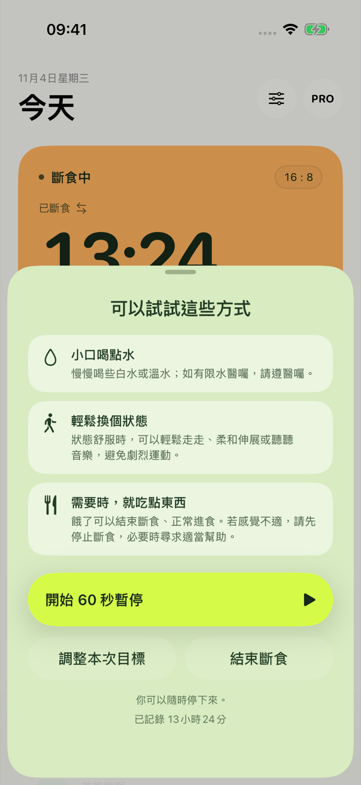
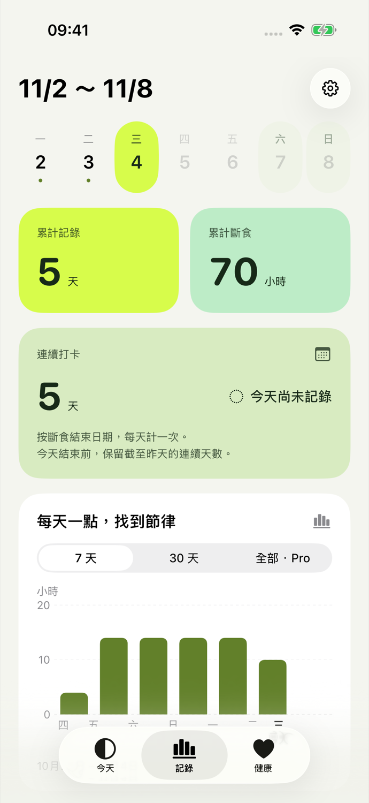
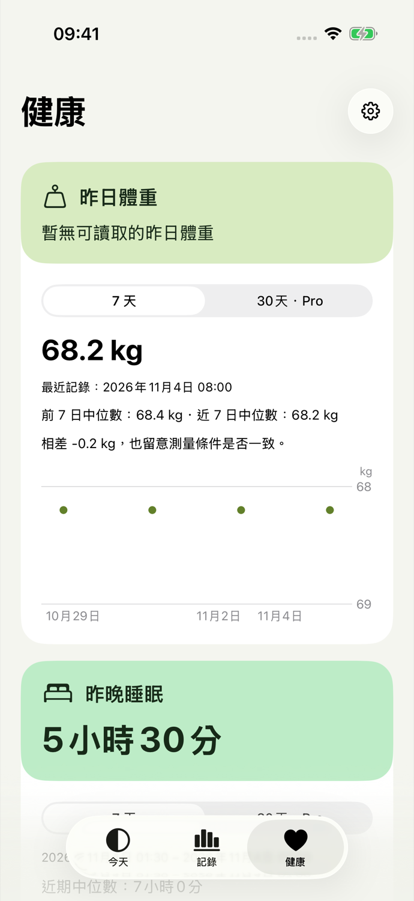

把節奏，留給自己
在 iPhone 和 Apple Watch 上查看大字計時，記錄輕斷食。當天作息隨實際開始與結束更新，依需要調整。
試試你的作息適用於 iOS 18 或以上、watchOS 11 或以上
產品預覽，尚未上架 App Store。

看看你的一天
選一個時長和開始時間，看看斷食與進食時段如何安排在一天裡。橙色表示斷食，亮綠表示進食；App 中的時間軸會隨你的實際記錄更新。
靜態範例：20:00 開始，翌日 12:00 進食。啟用 JavaScript 後可調整。
請輸入有效的開始時間。
斷食時段16 小時
進食時段8 小時
20:00 開始，翌日 12:00 進入進食時段。
時間依你目前的地區格式顯示。
此處僅示範作息，不儲存或上傳你的選擇。
先停下來，聽聽自己
想吃東西時，給自己一段可選的 60 秒暫停。

先看看喝水、輕柔活動和需要時進食的建議。你可以選擇暫停一分鐘，也可以調整目標或結束記錄。感覺不適時，請停止斷食並尋求適當協助。
讓記錄跟上生活
手機放下，也能看時間。計畫變了，就依真實發生的情況記下來。
抬腕，就能看見
轉動錶冠或上下滑動，在計時與計畫之間切換。直接開始或結束記錄，手機不在線也能使用，重新連線後再同步。

記下實際的每一天
用每週日期列找到某一天，回看累計時長與連續打卡，也可切換 7 天或 30 天圖表。免費版可查看最近 30 天記錄，Pro 解鎖更早歷史。記錄時間可以更正，記錄也可以刪除。

睡眠、體重和運動，一起回看
在獨立的健康頁，分別查看昨晚睡眠、昨日體重和運動的摘要與趨勢。每一類都可單獨切換圖表週期。
7 天圖表免費，Pro 可查看 30 天。健康資料按類別授權，來源在設定中管理，缺少的記錄不會補成零。

斷食記錄在裝置上
同一裝置的 App 與小工具共享斷食記錄，配對的 iPhone 與 Apple Watch 透過系統連線同步。Fasting 沒有自建資料伺服器。
健康資料由你授權
可分別選擇讀取睡眠、體重和訓練。最多 30 天的健康快取僅留在 iPhone 私有目錄，不進入手錶或小工具，也不寫回 Apple 健康。
分享前，先由你看過
記錄分享圖可以隱藏數字和具體日期。晨間打卡圖還可顯示你選定的健康項目；分享前可逐項隱藏。
刪除由你決定
在設定中刪除全部資料。刪除會在下次同步時傳給配對裝置；已經儲存或分享的圖片需在相應位置自行處理。
你可能想知道
Fasting 會告訴我該斷食多久嗎？
時長由你選擇。App 提供 12:12、14:10、16:8 和 8–20 小時自訂目標，只記錄你自主選擇的作息。它不判斷斷食是否適合你，也不提供診斷或治療建議。
達到目標後，會自動結束嗎？
不會。達到目標只更新顯示和可選提醒。你可以提前結束，也可以在準備好時結束；記錄會保留實際起訖時間。
必須連接 Apple 健康嗎？
不需要。計時和斷食記錄不依賴 Apple 健康。健康類別按需授權，關閉某一類別後會停止查詢，並清除該類別的本機快取與相關提示。Apple 健康中的原始記錄不受影響。
Apple Watch 需要手機在線嗎？
本機計時和開始、結束操作不依賴手機在線。重新連線後記錄會同步；若兩端離線時各開始了一筆記錄，App 會請你選擇保留哪一筆。
免費版和 Pro 有什麼區別？
計時、支持、Watch App、最近 30 天斷食記錄和夜色分享樣式免費。Pro 是可選的一次購買，解鎖完整歷史、中型與鎖定畫面小工具、Watch 複雜功能、即時動態、30 天健康圖表，以及晨光和手記分享樣式。價格以 App Store 顯示為準。
現在可以下載嗎？
目前是產品預覽，尚未發佈至 App Store 或 TestFlight。網頁與 App 均支援簡體中文、繁體中文和英文；正式下載連結會在發佈後補上。